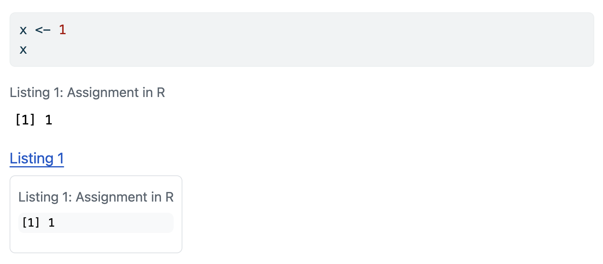
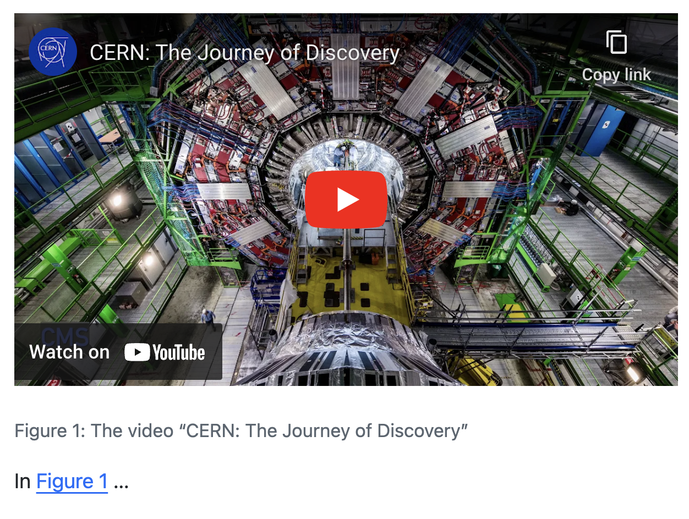
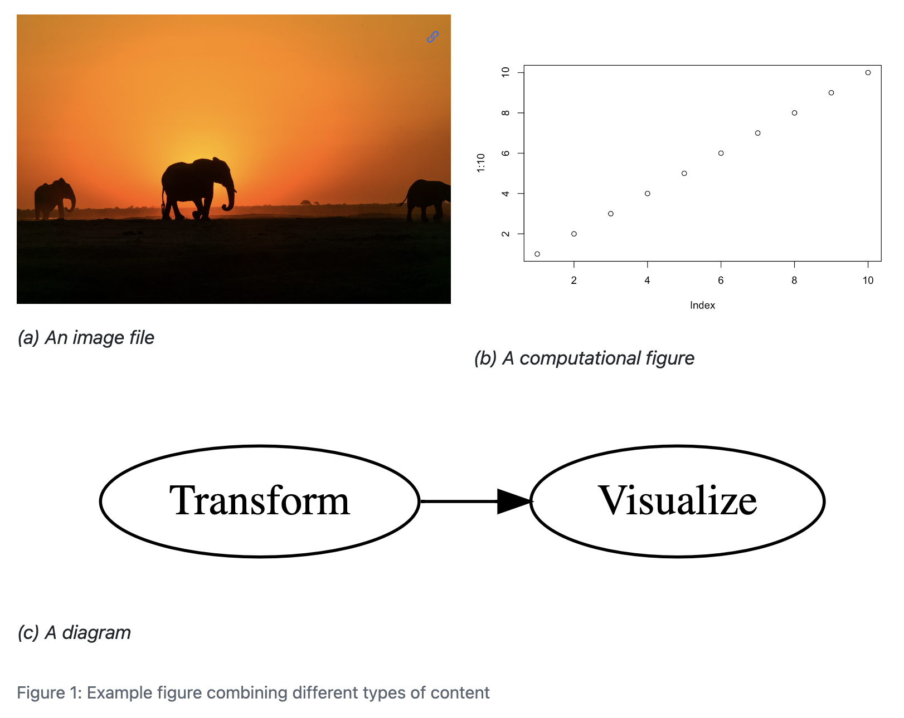

Cross-Reference Div Syntax
Quarto 1.4 Feature
This feature is new in Quarto 1.4. Download the latest version of Quarto at https://quarto.org/docs/download/.
Overview
Cross-referenceable figures, tables and code listings are known as float cross-references. Floats can appear in the rendered document at locations other than where they are defined, i.e. they float, and usually have captions.
Along with compact syntax for the most common uses of cross-references, Quarto also provides a more general div syntax for declaring floats that can be cross-referenced. To declare a cross-referenceable float, place the content inside a fenced div with the reference identifier as an attribute. The last paragraph inside the fenced div will be treated as the caption. For example:
::: {#fig-example}
CONTENT
Caption
:::To be recognized as a cross-reference the identifier must begin with one of the built-in float reference types (Figures (fig-), Tables (tbl-) and Listings (lst-)), or be defined as a custom float cross-reference type.
You can then refer to the element as usual with the @ syntax, e.g.
@fig-example shows...The content can be any Quarto markdown. For example, 图 1 is a markdown table treated like a figure:
::: {#fig-table}
| A | B |
|---|---|
| C | D |
A table treated like a figure
:::| A | B |
|---|---|
| C | D |
表 1 is an image treated like a table:
::: {#tbl-table}

An image treated like a table
:::
图 2 is a code cell treated like a figure:
::: {#fig-code}
```r
library(tidyverse)
starwars |>
ggplot(aes(height, mass)) +
geom_point()
```
A code cell treated like a figure.
:::library(tidyverse)
starwars |>
ggplot(aes(height, mass)) +
geom_point()On this page, we illustrate common use cases for Figures, Tables and Code Listings then some applications of the div syntax to:
Figures
To create a cross-reference to a figure using div syntax, create a fenced div with an id starting with fig-, include the image followed by the caption inside the div:
::: {#fig-elephant}

An Elephant
:::You can cross-reference a figure created by an executable code cell by including the code cell as the content:
::: {#fig-line-plot}
```{python}
import matplotlib.pyplot as plt
plt.plot([1,23,2,4])
plt.show()
```
A line plot
:::In the above example, you can reference the figure with @fig-line-plot, but not the code, which appears inline. If you would also like to be able to refer to the code, you can do so using code chunk options rather than the div syntax, see Cross-References for Executable Code Blocks for details.
Tables
To create a cross-reference to a table using div syntax, create a fenced div with an id starting with tbl-, include the table followed by the caption inside the div:
::: {#tbl-letters}
| Col1 | Col2 | Col3 |
|------|------|------|
| A | B | C |
| E | F | G |
| A | G | G |
My Caption
::: If the table is produced by an executable code cell, put the cell inside the div as content, e.g:
::: {#tbl-planets}
```{python}
from IPython.display import Markdown
from tabulate import tabulate
table = [["Sun","696,000",1.989e30],
["Earth","6,371",5.972e24],
["Moon","1,737",7.34e22],
["Mars","3,390",6.39e23]]
Markdown(tabulate(
table,
headers=["Astronomical object","R (km)", "mass (kg)"]
))
```
Astronomical object
:::In the above example, you can reference the table with @tbl-planets, but not the code, which appears inline. If you would also like to be able to refer to the code, you can do so using code chunk options rather than the div syntax, see Cross-References for Executable Code Blocks for details.
Listings
To create a cross-reference to a code listing using div syntax, create a fenced div with an id starting with lst-, include the code cell followed by the caption inside the div:
::: {#lst-customers}
```{.sql}
SELECT * FROM Customers
```
Customers Query
:::This also works for executable code cells that produce no output:
::: {#lst-assign}
```{r}
x <- 1
```
Assignment in R
:::However, if any output is produced, it is assumed the output should be the content of the cross-reference, and the code is lifted out and placed inline. For example, the code cell here produces output:
::: {#lst-assign-output}
```{r}
x <- 1
x
```
Assignment in R
:::
@lst-assign-outputWhen rendered the above results in output being the contents of the listing, with the code appearing before the listing:

If you need to reference both the code its output, use a combination of a display block and a code block with the code cell option echo: false:
::: {#lst-assign-both}
```r
x <- 1
x
```
```{r}
#| echo: false
x <- 1
x
```
Assignment in R
:::When the output is a figure or table, you can reference the code and the output individually by using code cell options, rather than the div syntax, as described in Cross-References for Executable Code Blocks.
Diagrams
To create a cross-references to a diagram using div syntax, treat it like a figure. For example, 图 3 is created using:
::: {#fig-simple}
```{dot}
graph {
A -- B
}
```
This is a simple graphviz graph
:::If you would rather give diagrams a label and counter distinct from figures, consider defining Custom Cross-Reference Types.
Videos
要在视频中添加交叉引用，使用 cross-reference div 语法，并将其视为数字。例如
::: {#fig-cern}
{{< video https://www.youtube.com/embed/wo9vZccmqwc >}}
The video "CERN: The Journey of Discovery"
:::
In @fig-cern...渲染为：

如果您希望给视频加上不同于数字的标签和计数器，可以考虑定义自定义交叉引用类型。
Subreferences
注解
When your sub-content is either all figures or all tables there is abbreviated syntax, see the Cross References page for Subfigures and Subtables for details.
Cross-reference divs can be nested to create elements with subreferences. For example, the outer div here defines the fig-subrefs reference along with the main caption, while the inner divs define fig-first and fig-second along with their respective captions:
:::: {#fig-subrefs}
::: {#fig-first}
CONTENT 1
First caption
:::
::: {#fig-second}
CONTENT 2
Second caption
:::
Main caption
::::This renders as:
CONTENT 1
CONTENT 2
Both the main element and the sub elements can be referenced directly in the text, e.g.
@fig-subrefs, @fig-first, @fig-secondThis renders as: 图 4, 图 4 (a), 图 4 (b).
Combined with layout attributes, you can create complex layouts of mixed content where each element can be referenced. For example:
:::: {#fig-complex layout="[[1, 1], [1]]"}
::: {#fig-elephant}

An image file
:::
::: {#fig-scatterplot}
```{r}
#| echo: false
plot(1:10)
```
A computational figure
:::
::: {#fig-diagram}
```{dot}
//| fig-height: 2
digraph {
rankdir = "LR";
Transform -> Visualize
}
```
A diagram
:::
Example figure combining different types of content
::::This renders as:

Computed Captions
If you want to include computed values in a caption, use the cross-reference div syntax, along with an inline code expression. For example:
::: {#fig-box}
```{python}
#| echo: false
import matplotlib.pyplot as plt
x = [1, 2, 3, 4, 5, 10]
p = plt.boxplot(x)
plt.show()
```
This dataset has `{python} len(x)` observations.
:::::: {#fig-box}
```{r}
#| echo: false
x <- c(1, 2, 3, 4, 5, 10)
boxplot(x)
```
This dataset has `{r} length(x)` observations.
:::Conditional Content
The cross-reference div syntax combined with conditional content allows the content of your reference to vary by format. For example, you might want an interactive JavaScript based plot when the format is HTML, but otherwise produce a static plot:
::: {#fig-scatterplot}
:::: {.content-visible when-format="html"}
```{r}
# Code to produce JaveScript based plot
```
::::
:::: {.content-visible unless-format="html"}
```{r}
# Code to produce static plot
```
::::
Scatterplot
:::
@fig-scatterplot